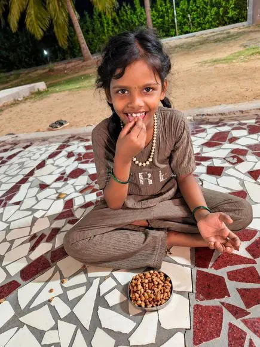
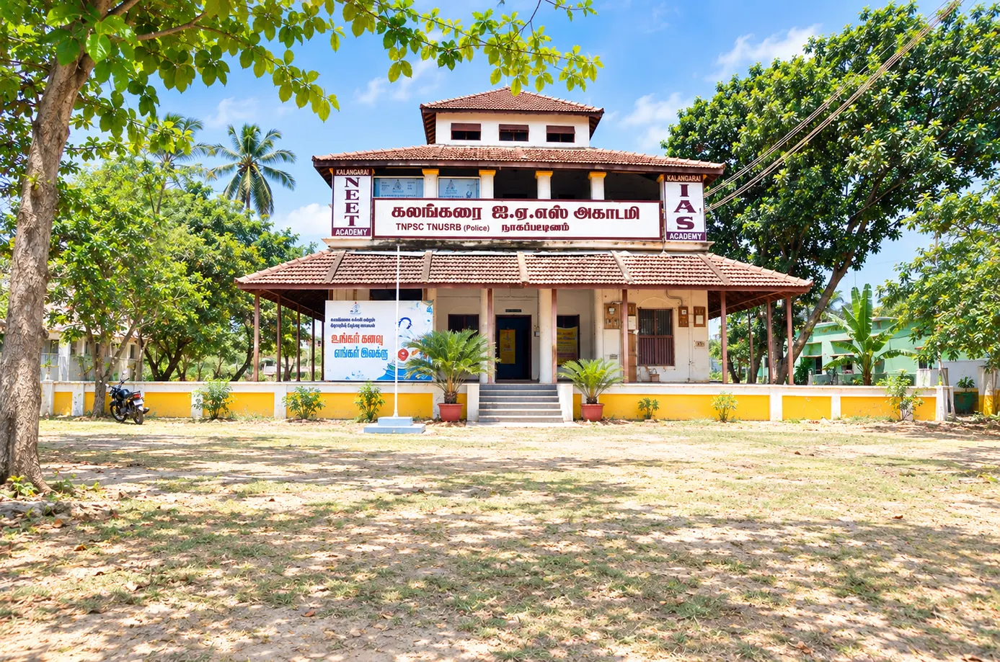
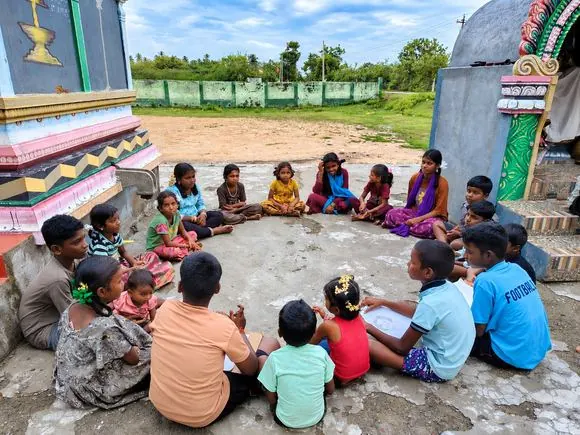
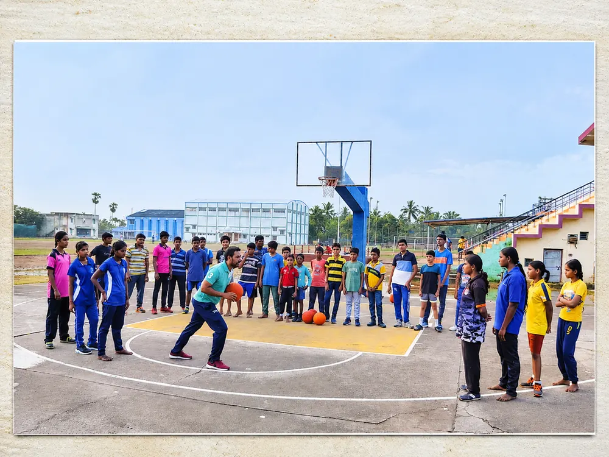
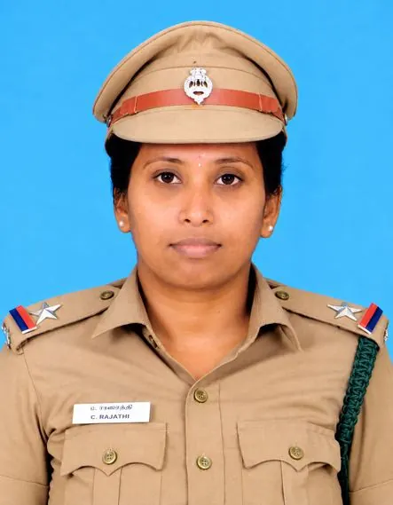

Kalangarai IAS Academy
Free coaching, model exams and mentoring for TNPSC, TNUSRB, SSC and RRB.
Lighting the Path to Equality.
Kalangarai Charitable and Educational Trust gives rural, first-generation and economically disadvantaged students in Nagapattinam free coaching for TNPSC, TNUSRB, SSC, RRB and NEET — with mentoring that turns talent into government careers.



Every evening after school, underprivileged rural children come to a safe, child-centred space to learn — building curiosity, confidence and communication alongside their studies.
“We do not focus only on what children learn; we focus on who they become.”

Kalangarai Charitable and Educational Trust was established in 2018 to empower students, youth, women and economically disadvantaged communities in Nagapattinam and surrounding areas — with special attention to rural and first-generation learners.
Through Kalangarai IAS Academy and NEET Academy, we provide free coaching, study materials, mock tests and mentoring, and run Nagapattinam district's first free residential competitive examination training centre.
“A student's dreams should never be limited by the economic circumstances of their family.”
— V. Kamal, Founder & Managing Trustee
Free coaching, model exams and mentoring for TNPSC, TNUSRB, SSC and RRB.

Free NEET coaching in Physics, Chemistry and Biology with weekly tests.

Nagapattinam district's first — rural aspirants stay and study full-time.

Ten learning models for rural children — academics, English, AI, sports and nutrition.

Awareness on savings, credit and livelihoods through Self-Help Groups.

Yoga Day since 2019, basketball camps and civic awareness for young people.
Sons and daughters of fishermen, farmers and daily-wage workers — now serving in police, revenue, education and courts.

State-level basketball player from a tsunami-affected family; cleared the SI exam on her first attempt.

Farmer's daughter from Sikkal and Fisheries University gold medallist; now in court service while pursuing UPSC.

Cleared the 2024 exam and received his appointment within a year of starting preparation.

From a 2004 tsunami-affected family in Akkaraipettai; succeeded on his third attempt.


Support free coaching, study materials, the residential centre and Sindhanai Sirpi.